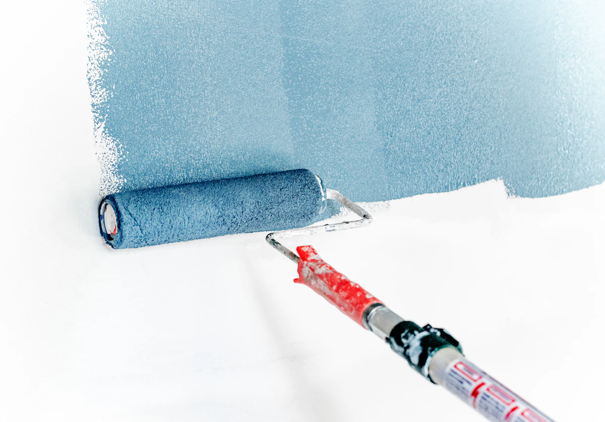

Varios arreglos en una visita
Ajustes de puertas y muebles, pequeños remates, sellados y fijaciones que sepáis resolver.
Solicitar lista y fotos antes. Favorece agrupar tareas y evita que un desplazamiento se coma un trabajo pequeño.
Sevilla · Dos socios · Sin anuncios de pago
La oportunidad está en resolver montajes, arreglos y puestas a punto con un alcance claro. Vender bien cada hora de Luis y Lino importa tanto como llenar la agenda.
Estudio para decidir. Los precios propuestos y los resultados económicos son hipótesis que habrá que validar con sus habilidades, costes y encargos reales.
Google Maps, recomendaciones y colaboradores cercanos son las prioridades con cero presupuesto publicitario. La futura web comercial debe apoyarse en servicios rentables y pruebas reales. Esta página es el estudio, no un catálogo de trabajos realizados.
Vuestra ventaja posible: hablar directamente con las dos personas que harán el trabajo, acordar el alcance y cumplir lo pactado. Hay que demostrarlo, porque la competencia también promete confianza.

Son propuestas de enfoque, no un catálogo que debáis anunciar sin comprobar vuestras capacidades. Elegid primero una o dos que dominéis y podáis presupuestar con confianza.
Ajustes de puertas y muebles, pequeños remates, sellados y fijaciones que sepáis resolver.
Solicitar lista y fotos antes. Favorece agrupar tareas y evita que un desplazamiento se coma un trabajo pequeño.
Montajes definidos por modelo, medidas, condiciones de acceso y fijaciones necesarias.
Acordar quién aporta piezas y materiales, si hacen falta ambos y qué incluye retirar embalajes.
Una lista cerrada de ajustes, pequeños arreglos, montajes y repasos dentro de vuestras especialidades.
Puede abrir relaciones recurrentes con propietarios e inmobiliarias. Confirmar plazo, acceso y persona que aprueba extras.
Anuncios, compra de contactos, impresión masiva, suscripciones comerciales y promesas de atención 24 horas. Tampoco dedicaría el arranque a un blog extenso ni a publicar todos los días.
Cero gasto publicitario no significa cero coste: vuestro tiempo, vehículo, teléfono, herramientas y materiales cuentan. Las cifras de actividad del plan son objetivos propios de ejecución, no previsiones de ventas.
Los datos permiten elegir hipótesis comerciales. No permiten calcular cuántos trabajos vais a recibir, cuánto buscará la gente en Google ni qué precio aceptará.
Transacciones de vivienda usada · 2025. Vivienda nueva: 1.416.
IECA–SIMAFicha de Sevilla actualizada el 18/08/2026. Una venta no equivale a una reforma; la edad tampoco acredita necesidad ni capacidad de gasto. Inferencia comercial: probar puesta a punto tras compra y atención sencilla por teléfono, además de WhatsApp.
| Segmento | Momento de necesidad | Oferta útil | Condición para que compense |
|---|---|---|---|
| Particulares cercanos | Mueble nuevo, arreglos pendientes, mudanza. | Montajes y lista de arreglos. | Filtrar con fotos, agrupar tareas y pactar mínimo. |
| Propietarios e inmobiliarias | Compra o cambio de inquilino. | Puesta a punto con lista y fotos finales. | Un responsable que aprueba; alcance y fecha claros. |
| Administradores de fincas | Incidencias pequeñas y trabajos programados. | Proveedor para tareas asumibles. | Acordar pago, acceso, autorización y horarios. |
| Comercios y oficinas próximos | Mobiliario, remates y mantenimiento. | Visitas planificadas fuera de horas conflictivas. | Comprobar especialidad y disponibilidad real. |
| Gestores de alojamientos | Revisiones y puesta a punto entre estancias. | Mantenimiento programado. | Solo con respuesta pactada; alta urgencia puede desorganizaros. |
La prioridad es una recomendación operativa, no un ranking estadístico de rentabilidad. El directorio del Colegio de Administradores de Fincas de Sevilla permite localizar despachos; su presencia allí no implica que necesiten vuestros servicios.
La escala metropolitana añade viviendas principales: Dos Hermanas, 47.885; Alcalá de Guadaíra, 26.922; Mairena del Aljarafe, 16.548 (Censo 2021). Dos Hermanas · Alcalá · Mairena.
Cuando sepamos vuestra base, escoger uno o dos corredores iniciales: capital y municipios próximos; Aljarafe; o eje Dos Hermanas–Alcalá, según recorridos reales. Agrupar citas y presupuestar desplazamiento en encargos alejados. Son ejemplos de organización, no tiempos de viaje calculados.
Capital, área metropolitana y provincia no son equivalentes. El POTAU de Sevilla delimita 46 municipios; esa delimitación administrativa no determina vuestro radio rentable.
Muestra exploratoria de siete webs revisadas el 09/10/2026. Refleja su comunicación pública; no es un ranking de Google Maps ni una comprobación de calidad, reseñas, tamaño de plantilla o cuota de mercado.
| Presencia comercial | Mensaje y captación observados | Aprendizaje para L&L |
|---|---|---|
| Manitas Sevilla | Catálogo muy específico, varias tareas por visita y páginas por municipios. | El cliente debe reconocer su problema. Entidad operadora no verificada en esta investigación. |
| Manitas Marcos Sevilla | Enfoque personal, oficios y entradas para propietarios, negocios y comunidades; llamada y WhatsApp. | Mostrar quién sois y para quién trabajáis. |
| Resuelvia | Base declarada en Dos Hermanas, responsable visible, contacto con fotos por WhatsApp y presupuesto tras visita; puesta a punto de pisos. | WhatsApp y alquiler ya son propuestas presentes. Hay que aportar pruebas propias. |
| Mi Segundo Marido | Reformas, montajes y mantenimiento; anuncia visita gratuita, precio cerrado y amplia cobertura. | Definir condiciones antes de imitar desplazamientos gratuitos. |
| Manitas 24 Horas Sevilla | Urgencia, atención continua, llamada y WhatsApp. | Podéis centraros en trabajos programados con horario acordado. |
| Multidipro | Oferta multiservicio, montaje, mantenimiento y obras; datos de sociedad y contacto. | Identidad y datos verificables ayudan a elegir proveedor. |
| Carpin & Decora | Especialidad en carpintería, manitas y pequeñas reformas; contacto y proyectos. | Una especialidad reconocible puede ordenar un catálogo amplio. |
La web de Manitas Sevilla publica 45 € por la primera hora, con mínimo de una hora, IVA y desplazamiento municipal incluidos; piezas específicas aparte. Es una oferta individual publicada y sujeta a confirmación, no una media de Sevilla ni una tarifa aconsejada para vosotros.
Dos profesionales, materiales, accesos y desplazamientos cambian el coste. No se ha obtenido una muestra comparable de presupuestos reales. Antes de publicar precios, medid vuestros trabajos y utilizad la calculadora del plan.
Precios · evidencia y propuesta separadas
Se revisaron 11 páginas de precios y condiciones: algunas pertenecen al mismo anunciante. No son 11 proveedores independientes ni una encuesta de operaciones cobradas. Una salida, una hora individual y un bloque de dos personas no son equivalentes.
| Fuente | Importe anunciado | IVA y alcance | Cómo interpretarlo |
|---|---|---|---|
| Manitas Sevilla - Salva Web propia de anunciante local | 30 € primera hora; 25 € siguientes | IVA no indicado. Salida y fijaciones incluidas; repuestos aparte. | No consta actualización de tarifa. No es una oferta confirmada para dos personas. |
| ManitasSevilla.com · pequeñas reparaciones Web comercial local; identidad del prestador no verificada | 45 € primera hora; armario 60–110 €; TV 55–95 € | IVA y desplazamiento municipal incluidos; piezas concretas aparte. | Tarifa publicada, no factura comprobada; operador no verificado. |
| Taskrabbit · montaje de muebles Sevilla Plataforma comercial de profesionales; no encuesta independiente | Alrededor de 27 €/h para montaje | No aclara aquí IVA, mínimos ni todos los cargos. | Escaparate de plataforma; no equivale al ingreso neto del montador. |
| Cronoshare · guía de montaje de muebles 2026 Guía editorial de comparador comercial | 25–40 €/h en su guía para Sevilla | IVA de esa tabla no explícito; viaje y ayuda pueden ir aparte. | Su página local da 21–28 €/h: discrepancia, no una media fiable única. |
| Vega Home · pintor Sevilla Web propia de empresa que ofrece servicios locales | Habitación: 250–450 €; vivienda de 70 m²: 900–1.500 € | IVA no indicado. Alcance declarado: paredes, techo, preparación y limpieza. | Medir y confirmar soporte. Son ofertas orientativas, no rendimiento probado. |
| Reformas Bascón · guía de precios Guía comercial alojada en web de reformas local | 8 / 12 / 18 €/m² de pared según preparación y calidad | Sin IVA. No son m² de suelo de la vivienda. | Título 2025/2026, pie enero de 2025: vigencia sin confirmar. |
| IKEA España · coste del servicio de montaje Minorista; oferta primaria a través de Taskrabbit | Montaje desde 23 € por servicio | Mínimo según producto y contratación, no una tarifa por hora. | No significa que cualquier armario cueste 23 € ni que cubra instalaciones. |
| Expertos en Parquet · ofertas Huelva y Sevilla Web propia de especialista regional | 90 € por 2 h de asesoramiento de suelo | IVA incluido; promoción con código, hasta 31/12/2026. | Es un tutorial, no la instalación del pavimento: comparación de formato. |
También se contrastaron pintura de ManitasSevilla, la página local de Cronoshare y Taskia. Sus cifras tienen alcances o condiciones incompletos. El escaparate de Taskia mostró precios inferiores a 10 €/h y cambió entre búsqueda y página; no se utiliza como suelo rentable. Descargar evidencia y límites de las fuentes.
Propuesta propia; no tarifas ya aprobadas de L&L. Probar con 10–20 presupuestos reales y revisar resultado por hora-persona total, aceptación y repasos. Los ejemplos de PVP aplican 21 %; el tipo real se determina para cada operación.
| Paquete | Capacidad reservada | Base sin IVA | Ejemplo total con 21 % | Alcance a pactar |
|---|---|---|---|---|
| Visita pequeña agrupada | 1 persona × 1 h 1 horas-persona | 45 €–55 € | 54,45–66,55 € | Salida en microzona pactada y hasta1h de mano de obra; lista acordada antes. Fuera: Piezas, material importante, viaje fuera de zona, aparcamiento especial y obras. |
| Lista de arreglos de dos horas | 1 persona × 2 h 2 horas-persona | 80 €–95 € | 96,80–114,95 € | Una visita, tareas sencillas preacordadas y fotos de cierre. Fuera: Piezas y problemas ocultos; no garantizar número de tareas sin verlas. |
| Montaje o puesta a punto en pareja | 2 personas × 4 h 8 horas-persona | 260 €–320 € | 314,60–387,20 € | Bloque reservado y alcance escrito de montaje o varias tareas. Fuera: Muebles, piezas, transporte de mercancía, retirada especial y servicios regulados. |
| Jornada de seis horas productivas en pareja | 2 personas × 6 h 12 horas-persona | 390 €–480 € | 471,90–580,80 € | Mano de obra para puesta a punto planificada. Fuera: Materiales, compras y viajes no incluidos en alcance; no equiparar a8h completas en casa. |
Los bloques largos sitúan la mano de obra en torno a 32,50–40 €/hora-persona facturada. Los trabajos cortos tienen un mínimo por salida. La zona incluida, el aparcamiento, las compras y los consumibles deben constar por escrito; no se regala el viaje a toda la provincia.
Medir paredes y techos por separado. Contar protección, preparación, número de manos, secados, muebles, limpieza y posibles retornos. Humedades de origen, alturas y alisados cambian el trabajo.
Ejemplo propio: 2 personas × 3 días × 6 h productivas = 36 horas-persona. A 38 € son 1.368 € de mano de obra; con 200 € de materiales y 60 € de logística, la base alcanza 1.628 € antes del margen por incertidumbre. Si el cliente ofrece 1.000 € por ese mismo alcance, hay que reducir alcance o rechazarlo, no asumir que sigue siendo rentable.
No es una tarifa de pintura ni una estimación universal de duración. Se comprueba contra medición y prueba de productividad.
Para una visita extra de 40 km y una hora total de viaje con ambos, una hipótesis de 0,35 €/km y 25 €/hora-persona total añade 14 € de vehículo + 50 € de tiempo = 64 € antes de IVA, más aparcamiento si procede.
Son costes de ejemplo, no kilometraje fiscal ni tiempos calculados desde una base conocida. Si transporte o tiempo ya están cubiertos por el paquete, no se suman otra vez.
Agrupar por corredor y día: capital, Aljarafe, Dos Hermanas–Alcalá u otra zona próxima a su base. Confirmar recorridos reales; cubrir Sevilla no obliga a aceptar cualquier pequeño encargo al mismo mínimo.
Economía de dos personas · supuestos modificables
El modelo separa IVA, materiales, gastos, dos cuotas y reservas. No hay empleados añadidos ni ingresos pasivos. El excedente remunera también el trabajo de Luis y Lino: no se han descontado dos sueldos adicionales. Se supone un reparto 50/50 para comparar, no para decidir cómo deben constituirse o facturar.
Hipótesis de trabajo: 60 % del tiempo del equipo se factura.
Costes y tarifas son hipótesis, no datos aportados por Luis y Lino. Los cambios no se envían a ningún servidor.
Revisa los valores del escenario.
192 horas facturables; 128 horas para el resto.
La última cifra no es un salario neto ni un IRPF calculado. Es caja orientativa después de una provisión configurable. Cada persona tendrá su tributación real.
Estos valores fijos sirven de referencia; los controles de arriba modifican solo el escenario abierto. Todos tienen 20 días × 8 h × 2 personas, 11 meses equivalentes de ingresos, 12 de gastos, 15 % sobre materiales y una reserva operativa del 3 % de mano de obra.
| Escenario | Ocupación y horas/mes activo | €/hora-persona sin IVA | Facturación/mes activo sin IVA | Equipo disponible/mes activo antes de IRPF | Por socio/mes calendario antes de IRPF | Por socio tras provisión 20 % |
|---|---|---|---|---|---|---|
| Arranque | 40 % · 128 h | 32 € | 4614 € | 2571 € | 1117 € | 894 € |
| Agenda estable | 60 % · 192 h | 38 € | 8216 € | 5427 € | 2414 € | 1931 € |
| Bien organizados | 70 % · 224 h | 42 € | 10.673 € | 7301 € | 3263 € | 2611 € |
| Techo exigente del modelo | 80 % · 256 h | 45 € | 13.245 € | 9199 € | 4125 € | 3300 € |
Estructura inicial supuesta: 850 €/mes entre los dos. Ejemplo de reparto: 350 € de vehículo y desplazamientos, 150 € de gestoría/seguro, 200 € de desgaste o reposición de herramientas, 50 € de teléfono y 100 € de otros gastos. No son presupuestos contratados. La cifra sube a 950/1.100 € en los escenarios superiores.
Materiales por mes activo: 450/800/1.100/1.500 € de coste; facturados a coste +15 %. Cuotas por persona: 310/460/520/550 €, supuestos redondeados orientados por los tramos ordinarios 2026, sin bonificaciones. Si se modifica rentabilidad, revisar también la cuota: el calculador no regulariza RETA automáticamente.
La reserva operativa no es un gasto fiscal por el mero hecho de apartarla; tampoco esta simulación calcula un rendimiento fiscal. El 20 % mostrado es un colchón elegido para ilustrar caja, que puede resultar insuficiente o excesivo. La regla general del 20 % del modelo 130 es un pago a cuenta con sus ajustes, no un impuesto final plano. IVA cobrado y deducible se gestionan aparte y no son ganancia. Costes introducidos sin IVA deducible; si no se puede deducir, incorporarlo al coste.
AEAT: modelo 130 · BOE: cotización 2026 · Importass: rendimientos, regularización y reducciones.
No hay un máximo demostrable sin conocer demanda, destreza y precios aceptados. El techo exigente que hemos modelizado factura 13.245 € por mes activo entre ambos, de los que 1.725 € son materiales facturados. Usa 256 horas-persona productivas de 320 y 45 €/hora-persona de mano de obra. Es un objetivo alto, no una previsión del primer año.
En ese escenario quedan unos 4.125 €/persona/mes calendario antes de IRPF y después de la reserva operativa, o unos 3.300 € al apartar el 20 % ilustrativo. Se necesita cartera repetida, bloques largos, poco retrabajo, buena ejecución y aceptación de un precio medio alto. Una avería, enfermedad o falta de consultas lo reduce. Una tarifa superior podría dar más; no hay evidencia para prometerla.
Orden recomendado para probar con vuestro tiempo y los medios que ya tengáis. Una ficha o una publicación no garantiza recibir consultas. El seguimiento y las pruebas reales son parte del trabajo comercial.
Crear o reclamar el Perfil de Empresa es gratuito. Completar marca real, categoría que mejor describa la actividad principal, servicios, teléfono, horarios y fotos propias. Google: perfil sin coste.
Para trabajo a domicilio, usar una única ficha con áreas reales de servicio; ocultar la dirección si no atendéis clientes allí. No inventar locales ni fichas para cada municipio ni añadir palabras al nombre comercial solo para posicionar. Directrices de Google.
Relevancia, distancia y prominencia influyen en la visibilidad. Marcar toda Sevilla no asegura aparecer en toda Sevilla. Completad y verificad la ficha siguiendo lo que os pida Google; los plazos no dependen de este plan. Cómo funciona el posicionamiento local.
Usad un teléfono de referencia y un único responsable de contestar en cada franja. WhatsApp Business permite organizar respuestas habituales y mensajes de ausencia. Guía oficial.
Antes de desplazaros: municipio o código postal, lista completa de tareas, fotos generales y de detalle, medidas o modelo, fecha deseada y acceso. Confirmar si hace falta visita técnica y si tiene coste antes de acudir.
Reservad dos momentos al día para responder y enviad un aviso realista fuera de horario. Una persona puede encargarse de la primera respuesta y la otra revisar presupuestos; intercambiad funciones según la carga.
Guardar fotos autorizadas, tarea, municipio, problema y resultado. Pedir una reseña sincera a todos los clientes reales mediante el enlace de Google, sin regalos, descuentos ni selección de opiniones favorables. Reseñas en Google.
Con cero trabajos previos, empezar con una presentación honesta y demostraciones propias identificadas como tales. No usar obras ajenas, imágenes generadas como portfolio ni opiniones de amistades que no hayan sido clientes.
Primero, conversaciones personales con conocidos y antiguos clientes reales. Después, probar tres conversaciones nuevas por semana con inmobiliarias, ferreterías, tiendas de muebles, empresas de limpieza o administradores próximos. Aprovechad trayectos para no añadir rutas comerciales largas.
Elegid inicialmente diez contactos bien encajados; presentad dos o tres servicios, alguna foto real, vuestra cobertura y cómo pedís información. Proponed empezar por una tarea pequeña. Preguntad qué incidencias les cuesta resolver y cómo aprueban y pagan los trabajos.
Es un experimento propio, no un volumen de ventas previsto. El directorio de CAF Sevilla ayuda a localizar despachos. Priorizad presentaciones personales y permiso para continuar por mensaje; no envíos masivos. Un acuerdo de colaboración no debe exigir un servicio continuo que no podéis atender.
Elegid un perfil sencillo en Instagram o Facebook según dónde estén vuestros contactos. Una publicación útil por semana cuando tengáis material: antes/después, qué se resolvió y municipio, sin direcciones de clientes. Reutilizadla en vuestro estado de WhatsApp.
En grupos vecinales, participar solo donde las normas permitan ofrecer servicios. Responder a necesidades concretas y pedir permiso al administrador para una presentación. Probar primero dos grupos cercanos y registrar si llegan encargos.
No hace falta comprar tarjetas ni hacer buzoneo ahora. Una presentación digital con el logo, servicios y contacto es suficiente para empezar. Los seguidores no sustituyen a trabajos cobrados.
Borradores para vuestro uso. No se ha enviado ningún mensaje ni se ha contactado con nadie.
Hola, somos [nombres], de L&L Multiservicios. Estamos empezando a ofrecer [dos servicios que domináis] en Sevilla y alrededores. Si necesitas resolver algo en casa, puedes enviarnos unas fotos y tu municipio para que lo valoremos. Y si conoces a alguien a quien le venga bien, puedes pasarle nuestro contacto. Gracias.
Somos [nombres], de L&L Multiservicios. Hacemos [servicios concretos] en [zonas]. Nos gustaría conocer qué pequeños trabajos os cuesta encontrar quién resuelva. Podemos valorar una primera tarea con fotos, alcance y presupuesto por escrito. ¿Os viene bien que os dejemos nuestra presentación y contacto?
Gracias por escribir a L&L. Para valorar el trabajo, envíanos tu municipio, unas fotos, la lista de tareas y la fecha que necesitas. Si es un mueble, también el modelo o enlace y sus medidas. Lo revisamos y te indicamos qué podemos hacer y el siguiente paso antes de concertar la visita.
Gracias por confiar en L&L. Si te apetece contar cómo ha ido el trabajo, puedes dejar tu opinión sincera aquí: [enlace de Google]. Nos ayuda a darnos a conocer como pequeño equipo de Sevilla.
Google Ads: posponer hasta tener dinero que podáis arriesgar, una oferta validada y medición de encargos. No se han verificado costes por clic. Habitissimo y Cronoshare: no tratarlos como captación gratuita por el mero hecho de poder registrarse.
Habitissimo anuncia pago por contactos; su página contiene mensajes contradictorios sobre suscripción y cuotas. Cronoshare describe una devolución ordinaria parcial en créditos, no la recuperación íntegra del dinero. Confirmar condiciones antes de cualquier compra.
Taskrabbit opera en Sevilla y puede interesar si domináis montajes, pero hay que verificar admisión, costes y cobro neto del profesional. Sus precios al cliente no son vuestro ingreso neto. Ninguna de estas opciones forma parte del gasto inicial recomendado.
Ejemplo operativo del escenario estable, solo si ambos pueden trabajar de forma autónoma y tienen medios: 80 horas-persona disponibles, 48 facturables y 32 para viajes, compras, consultas, presupuestos y huecos.
| Bloque semanal | Encargos | Horas-persona facturables | Condición |
|---|---|---|---|
| Dos puestas a punto en pareja | 2 × 2 personas × 6 h | 24 | Lista cerrada, acceso listo, materiales previstos. |
| Visitas individuales de arreglos | 8 × 1 persona × 2 h | 16 | Agrupadas por zona; no ocho salidas largas. |
| Montajes individuales | 2 × 1 persona × 4 h | 8 | Solo los modelos que una persona pueda montar con seguridad. |
| Total ilustrativo | 12 encargos/semana | 48 | Equivale a 192 h en el mes de cuatro semanas del modelo. |
Una ficha de área de servicio con nombre real, servicios concretos, horarios y fotos propias. Pedir una reseña honesta tras el trabajo terminado y responder a las consultas que encajen.
Relevancia, distancia y prominencia influyen en el posicionamiento; cubrir muchos municipios no garantiza aparecer en todos. No dar regalos por reseñas. Google explica sus factores · Política de reseñas.
Probar con inmobiliarias, administradores, tiendas de muebles y profesionales que no aceptan arreglos pequeños. Ofrecer un piloto concreto, fotos de cierre y un interlocutor; acordar quién aprueba y quién paga.
Meta de actividad inicial: 5 conversaciones individuales de calidad por semana entre ambos. No son ventas previstas. El directorio colegial sirve para localizar despachos, no para asumir interés ni enviar mensajes masivos.
Cada socio puede partir de las personas que conocen su trabajo. Tras el cobro, pedir permiso para usar fotos y dejar una forma sencilla de recomendarles. Anotar qué colaborador genera encargos cobrados y rentables.
Priorizar respuesta útil y pruebas reales sobre publicar a diario. Las imágenes de recurso de este estudio nunca deben usarse como «nuestros trabajos».
No se han realizado entrevistas ni enviado mensajes comerciales. Estos son experimentos propuestos que deben adaptarse a las respuestas individuales de Luis y Lino.
Objetivos de actividad propuestos. La captación puede tardar; no son una promesa de encargos.
Las casillas se guardan solo en este navegador cuando permite almacenamiento local. No se envían datos.
Ejemplo editable con cifras inventadas para explicar el cálculo. No son precios recomendados, costes reales vuestros ni medias de Sevilla. Trabajad con importes sin IVA para comparar; comunicad al cliente el total que corresponda.
El importe del ejemplo queda por debajo del objetivo.
Disponible no significa beneficio neto. Quedan por cubrir vuestro trabajo, cuotas, seguros, herramientas, administración, impuestos que procedan y contingencias. No se ha calculado fiscalidad ni rentabilidad real.
Puede hacerse en una libreta o una hoja que ya utilicéis. Una fila por oportunidad, sin duplicar cada mensaje del mismo cliente.
| Grupo | Datos mínimos | Para qué sirve |
|---|---|---|
| Procedencia | Fecha, origen (Google, recomendado, colaborador, red), municipio y servicio. | Ver qué canal trae necesidades que sí podéis resolver. |
| Resultado | Consulta válida, presupuesto, aceptado, terminado, cobrado; motivo de pérdida si se conoce. | Separar mensajes de ingresos cobrados. |
| Costes y tiempo | Importe sin IVA, materiales, terceros, transporte, horas de cada uno, compras y repasos. | Comparar resultado por hora total, no solo importe del encargo. |
| Continuidad | Repetición, recomendación y origen del nuevo cliente. | Identificar relaciones que merecen atención. |
Consulta válida: necesidad dentro de vuestro catálogo y cobertura, con información y plazo suficientes para valorarla. Tasa de aceptación: presupuestos aceptados ÷ presupuestos enviados. Coste comercial de tiempo: horas dedicadas al canal ÷ trabajos que genera, cuando ya haya cierres.
Con pocos casos, un porcentaje cambia mucho por un solo encargo. Usad las primeras semanas para aprender, sin concluir que un canal funciona o fracasa por una única experiencia.
Por vuestra indicación, este trabajo prepara la estrategia; no construye ni publica la web comercial. Se puede comenzar la captación antes de tenerla. Cuando llegue el momento, su función será explicar, demostrar y facilitar el contacto.
Empezar con una página bien resuelta es razonable. Crear páginas específicas por servicio cuando haya contenido propio suficiente. Evitar decenas de páginas idénticas cambiando solo el municipio.
Somos L&L Multiservicios, un equipo de dos personas. Cuéntanos qué necesitas y dónde: revisamos el trabajo y acordamos contigo el alcance y el presupuesto.
Acción principal: «Enviar fotos para valorar el trabajo».
Acción alternativa: «Llamar».
La valoración inicial por fotos no debe prometer un precio definitivo cuando se necesita inspección. No se han creado teléfono, correo, dirección, experiencia ni testimonios ficticios.
Consultas candidatas observadas en la oferta local, sin volúmenes de búsqueda medidos:
Añadir un municipio solo si lo atendéis. Escribir sobre tareas específicas que realmente hacéis. «Reformas» aparece de forma recurrente en las webs revisadas; usarlo es una recomendación de lenguaje local, no una prueba de que tenga más búsquedas que «remodelaciones».
Conservar el negro y dorado. Usar el logo completo en tamaño legible y una versión horizontal o reducida del kit cuando el espacio sea pequeño. El texto de servicios se pierde si todo el emblema se reduce a un icono.
Ya hay variantes vectoriales en vuestro proyecto. Se ha revisado la imagen aportada y la documentación del kit; no se ha modificado el diseño. El nombre debe mantenerse coherente en Google, redes y presupuestos.
Confirmar contacto, identidad del titular, servicios, horarios y autorización para las fotos. Añadir información de privacidad donde se recaben datos. Si se incorporan cookies no exentas, configurar consentimiento antes de activarlas.
Empezar sin publicidad ni analítica opcional simplifica el montaje. Referencias: AEPD: información al recoger datos y guía de cookies. Esto es una orientación de preparación, no una auditoría legal.
Consulta realizada el 9 de octubre de 2026. Se contrastaron estadísticas públicas, documentación oficial de plataformas y webs comerciales locales. Se seleccionaron siete competidores con contenido accesible para comparar mensajes y captación.
Datos municipales con su año; mensajes y condiciones visibles en las webs citadas; funcionamiento documentado de los canales. Las tarifas publicadas son declaraciones de cada proveedor.
Vuestras mejores especialidades, municipios rentables, demanda por servicio, tiempos de cierre y disposición a pagar. No se han hecho entrevistas a clientes, solicitudes de presupuesto ni una auditoría de Maps desde distintas ubicaciones.
No se presentan búsquedas, conversiones, ingresos o plazos de posicionamiento como resultados medidos. Los escenarios de facturación, precios propuestos y actividad comercial son hipótesis explícitas; la calculadora permite cambiarlas. El plan queda ajustado a cero gasto publicitario; herramientas, transporte y tiempo pueden tener costes.
Las tres fotografías de recurso no representan a Luis, a Lino ni trabajos de L&L. Se han descargado versiones optimizadas y se sirven desde esta web; no hay llamadas a bancos de imágenes ni CDN al abrir el estudio.
Iconos Lucide, versión 0.468.0 fijada a un commit. Licencias ISC y avisos MIT conservados con los archivos. Créditos y licencias completos · Inventario verificable de recursos.
Datos oficiales: parque residencial, compraventas y reglas fiscales. Declaraciones comerciales: tarifas visibles con sus condiciones. Propuesta propia: paquetes, organización, objetivos y modelo de ingresos. No se han medido cuota de mercado, demanda efectiva, búsquedas ni conversiones de L&L. Las fechas de consulta no certifican que una oferta siga disponible al contratar.
La prioridad es comprobar con ambos qué saben hacer, qué pueden acreditar, de qué medios disponen y cuánto les cuesta operar. Las instalaciones reguladas requieren habilitación: baja tensión y gas. La calculadora no sustituye esa validación ni la revisión de la gestoría.